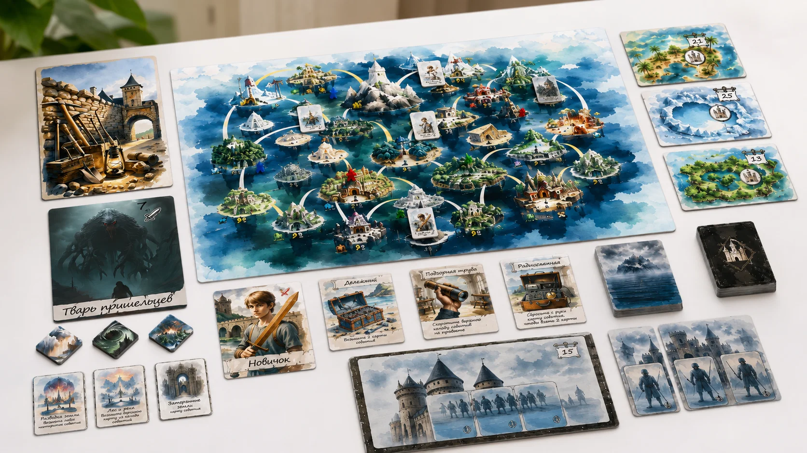
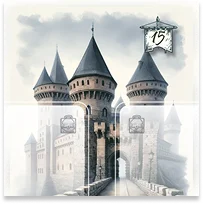
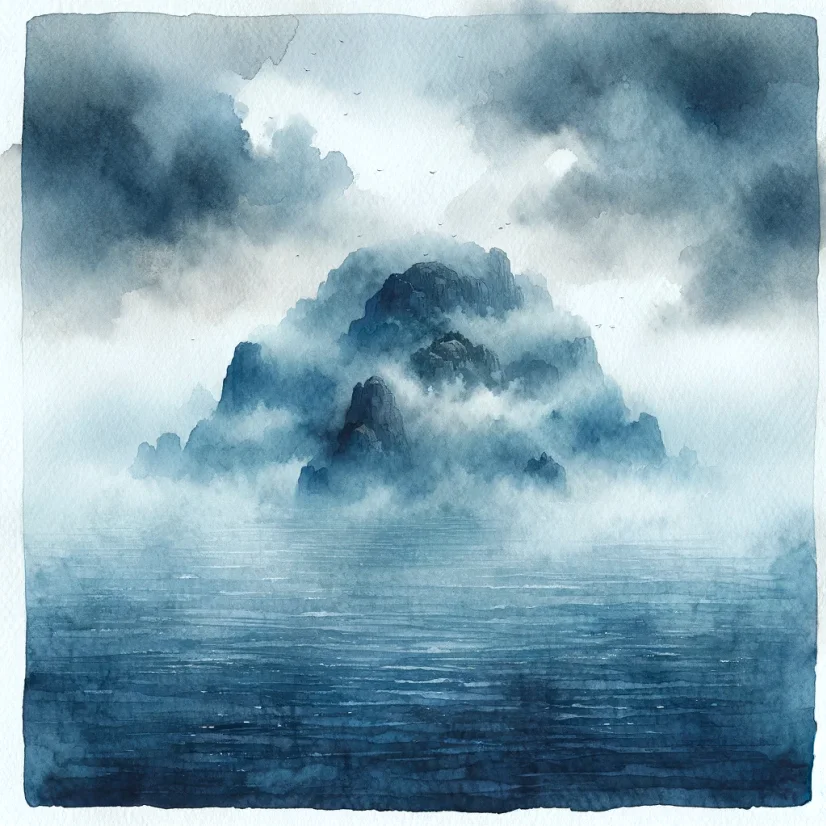
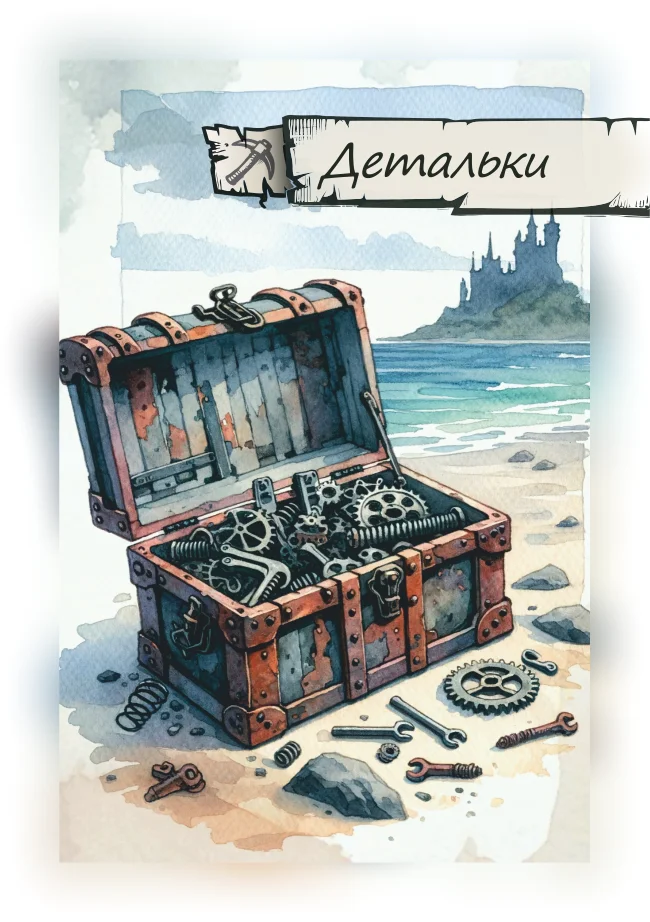
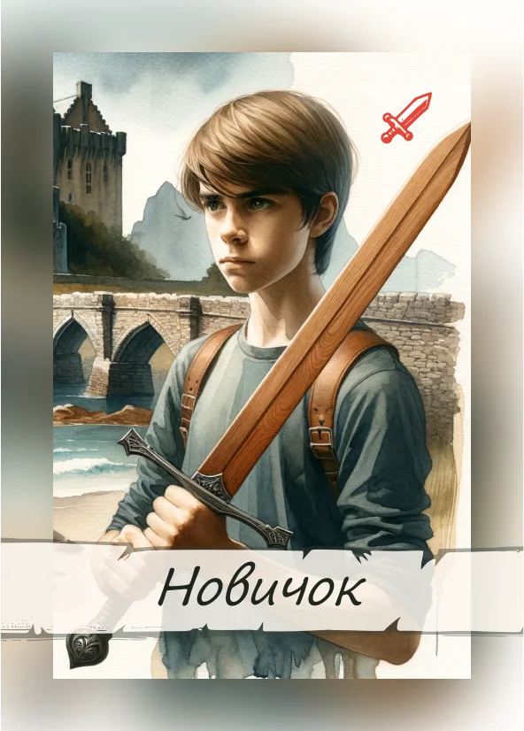
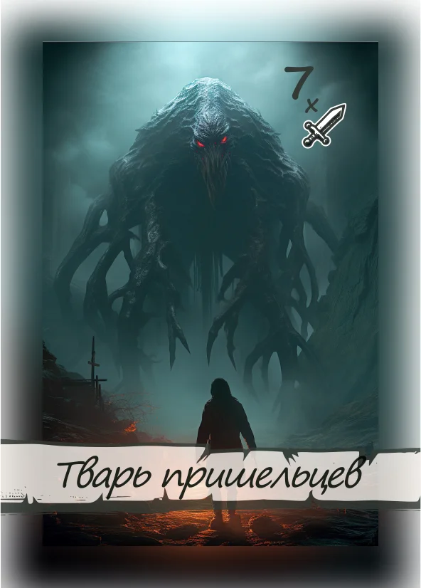
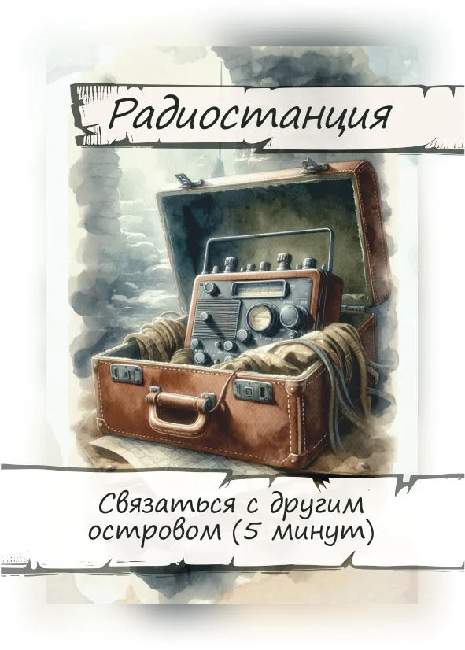
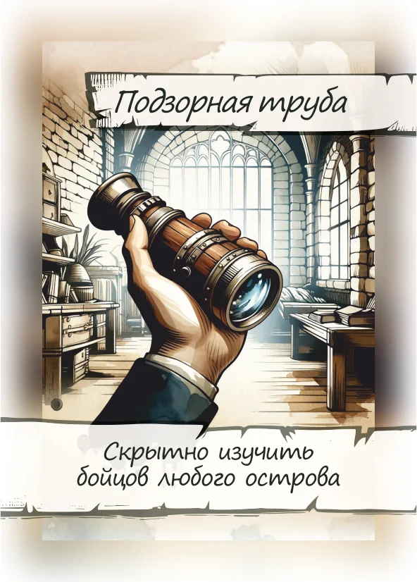
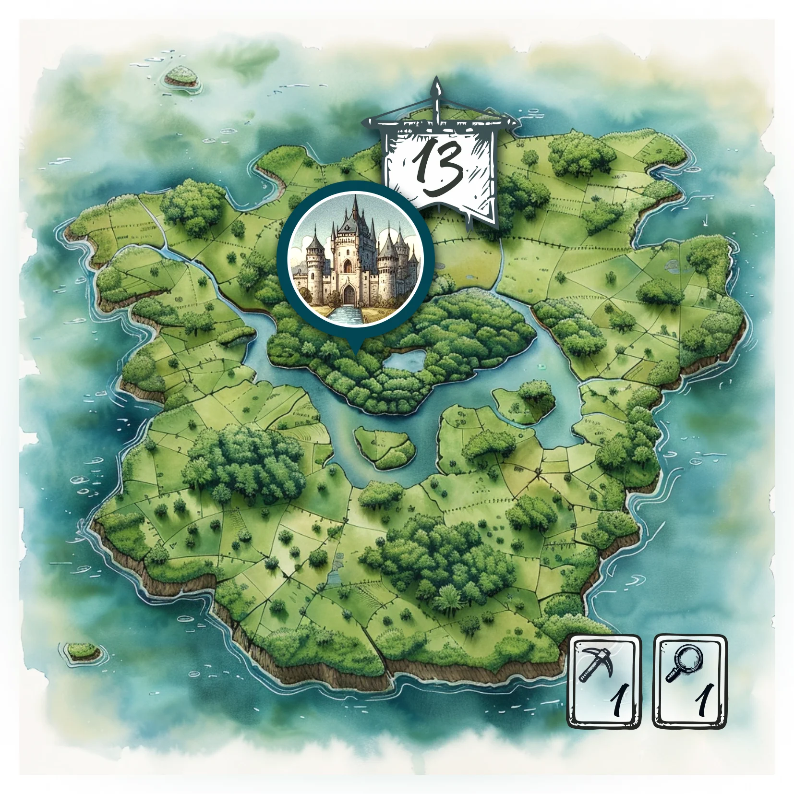

Сорок островов —
конкурируем, но идём к общей цели
Forty Islands —
competing toward a shared goal
Настольная игра для НЛМК по мотивам романа Сергея Лукьяненко «Рыцари сорока островов». Две кросс-функциональные команды соревнуются — но идут к общей цели. Симуляция процессов и рефлексия для команд, которые в реальности работают вместе. A board game for NLMK after Sergey Lukyanenko's novel "Knights of the Forty Islands". Two cross-functional teams compete — yet move toward a shared goal. A process simulation and reflection tool for teams that work together in real life.
КонтекстContext
Корпоративный университет НЛМК пришёл с задачей: две команды, которые в реальности работают вместе, должны выявить барьеры в своём взаимодействии, а после игры — спланировать шаги по их устранению. Обычный тренинг с этим справляется плохо: барьеры словесно «и так понятны», но не переживаются.
В качестве основы взяли роман Сергея Лукьяненко «Рыцари сорока островов»: подростков похитили из обычной жизни и разбросали по сорока островам, где живут кланы. Кому удастся подчинить все сорок островов — тот получит свободу. Это сильный фрейм, который сразу включает в людях желание играть, а не «проходить тренинг».
NLMK's Corporate University came with a brief: two teams who work together in real life have to surface the barriers in their interaction, and after the game — plan steps to remove them. A standard training does this badly: barriers are "verbally understood" but not felt.
As the source we took Sergey Lukyanenko's novel "Knights of the Forty Islands": teenagers ripped from their lives and scattered across forty islands, where clans live. Whoever subjugates all forty wins their freedom. It's a strong frame that flips people into "play" mode instead of "training" mode.
Моя рольMy role
Полный цикл: геймдизайн и визуальный дизайн всех компонентов. Концепция, механики, баланс, правила для ведущего, оформление поля, карт, замков, предметов, бойцов, ресурсов, жетонов.
«Сорок островов» — первый проект серии из четырёх для НЛМК. После неё пришли «Город систем», «Крейсер Федерация» и «Рыцари Средневековья» — клиент возвращался напрямую, без тендеров.
Full cycle: game design and visual design of every component. Concept, mechanics, balance, facilitator rules, board layout, cards, castles, items, fighters, resources, tokens.
"Forty Islands" was the first of four projects for NLMK. After it came "City of Systems", "Cruiser Federation", and "Medieval Knights" — the client returned directly each time, no tenders.
Ключевые решенияKey decisions
Заявленная цель — ловушка. На входе игрокам объявляют: «победитель — тот, кто захватит все сорок островов». В самой механике написано иначе: захватить все сорок островов одной командой почти невозможно. Это сделано осознанно: суть рефлексии после игры — что навязанная цель «победить» съедает реальную «выйти из ситуации». Игроки сами должны заметить, что цель была неправильной.
Чужие как тренер сотрудничества. На островах живут «Чужие» — внешняя сила, которая активно мешает плану. На четвёртом ходу они в открытую предлагают одной из команд: «убей соседа — отдадим вам два острова». Если команды соглашаются и идут на конфликт — Чужие усиливают противника десантами. Если объединяются — Чужие требуют вернуться к правилам и десантируются на оба клана. Это не «балансир», это дидактический механизм, провоцирующий разговор о том, кто реально на стороне игрока.
Радиовышки и бункеры — скрытые кооперативные пути. На островах есть инфраструктура, которая не даёт «победы» в классическом смысле, но открывает альтернативные сценарии. Захват 1 радиовышки = переговоры между командами 5 минут в раунд. 2 вышки = слабый сигнал с Земли. 3 вышки = можно подать ответ домой. Тайный путь: взорвать три бункера Чужих — система управления островами рушится, и игроки выходят из ситуации иначе, чем им предлагали. Эти пути не объявлены — игроки должны их собрать сами.
Туман войны как информационный барьер. Острова накрыты «туманом» — нельзя посмотреть, что внутри, пока туда не вошёл боец или не использован специальный предмет. Это та же информационная асимметрия, что между подразделениями в реальности: пока не пришёл — не знаешь, что у соседа.
Программирование действий. Каждый игрок в начале хода выкладывает три карточки действий на свой планшет — и ход разыгрывается уже по ним. Нельзя «передумать» в момент. Это превращает обсуждение перед ходом в реальные переговоры, а не «давайте я первый».
Дорефлексия. До игры участники письменно отвечают на три вопроса: «какие взаимодействия в моей работе кросс-функциональные», «какие сложности в этих взаимодействиях», «какие из них наиболее остро задевают конкретно меня». После игры этот список сравнивается с тем, что произошло на столе — рефлексия становится конкретной, не «общей».
The announced goal is a trap. At the start, players are told: "the winner is whoever captures all forty islands". The mechanics tell a different story: capturing all forty as a single team is nearly impossible. That's deliberate. The reflection after the game is exactly about how an imposed "win" goal eats the real "get out of the situation" goal. Players have to notice the framing problem themselves.
The Aliens as a cooperation coach. The islands have "Aliens" — an external force that actively breaks plans. On turn four they openly offer one team: "kill the neighbour — we'll give you two islands". If teams accept and go for conflict, the Aliens reinforce the loser with drops. If teams unite, the Aliens demand a return to "the rules" and drop on both clans. This isn't a balance lever — it's a didactic mechanism that provokes a conversation about who is actually on the player's side.
Radio towers and bunkers — hidden cooperative paths. The islands have infrastructure that doesn't deliver classic "victory" but opens alternative scenarios. Capturing 1 radio tower = 5-minute negotiation between teams once per round. 2 towers = a weak signal from Earth. 3 towers = you can send an answer home. Secret path: blow up three Alien bunkers — the islands' control system breaks and players exit the situation in a way that wasn't offered to them. These paths aren't announced — players have to assemble them.
Fog of war as information barrier. Islands are covered in "fog" — you can't see what's there until your fighter steps onto the island or you use a special item. The same information asymmetry that exists between departments in real life: until you've gone there, you don't know what your neighbour is doing.
Action programming. Each player at the start of the turn lays out three action cards on their dashboard — and the turn plays out from those. No "changing your mind" mid-turn. This turns the pre-turn discussion into real negotiation, not "I'll go first".
Pre-game reflection. Before the game, participants answer three questions in writing: "which interactions in my work are cross-functional", "what's hard about them", "which of those hit me the hardest". After the game, this list is compared to what happened on the table — reflection becomes specific, not "general".
Результаты Results
— На рефлексии группы прогоняют список из 7 проблем кросс-функциональных взаимодействий: противоречие целей, борьба за ресурсы, межличностные и межгрупповые конфликты, отсутствие единого инфополя, излишняя иерархичность, бюрократия, загруженность собственными делами. Какие видели на столе → как с этим работать в офисе. — During reflection, groups walk through 7 cross-functional problem types: goal conflict, resource competition, interpersonal and inter-group conflict, lack of a shared information field, excess hierarchy, bureaucracy, overload with own work. Which appeared on the table → how to address it back at the office.
Что говорили в НЛМКFrom NLMK
«Эта игра предназначена для двух команд, которые работают вместе в реальной жизни. Она направлена на то, чтобы две команды выявили барьеры в своём взаимодействии, а после игры, во время обсуждения, спланировали шаги по устранению данных барьеров».
— Корпоративный университет НЛМК, методолог
«Деловая игра — это не развлечение. Самостоятельный формат развития, который мы используем наравне с образовательными решениями. Игра помогает учиться в интересной форме, а знания и навыки, которые осваиваются в ходе игры, легко интегрируются в реальную жизнь».
— Корпоративный университет НЛМК, заказчик программы
«Эта игра учит нас общаться в команде и доверять друг другу». «В игровом формате у нас есть возможность совершать ошибки и находить пути их решения». «Игра учит формулировать цели и находить пути решения».
— Из обратной связи участников игры
"This game is designed for two teams that work together in real life. Its goal is for the two teams to surface the barriers in their interaction, and after the game — during the discussion — plan steps to remove those barriers."
— NLMK Corporate University, methodologist
"A business game isn't entertainment. It's a self-contained development format we use alongside educational solutions. The game helps people learn in an engaging form, and the knowledge and skills they pick up integrate easily into real work."
— NLMK Corporate University, program sponsor
"This game teaches us to communicate as a team and trust each other." "In the game format we get to make mistakes and find ways to solve them." "The game teaches you to formulate goals and find paths to them."
— From player feedback
Компоненты игры Game components












НЛМК · Город систем → NLMK · City of Systems →
Симуляция производственной цепочки: локальные решения → системные эффекты. Production-chain simulation: local decisions → systemic effects.